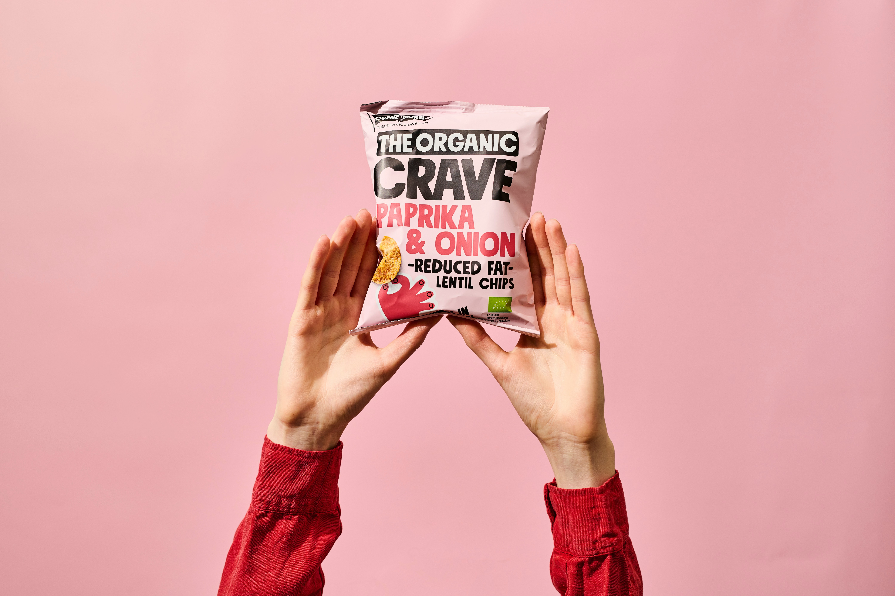
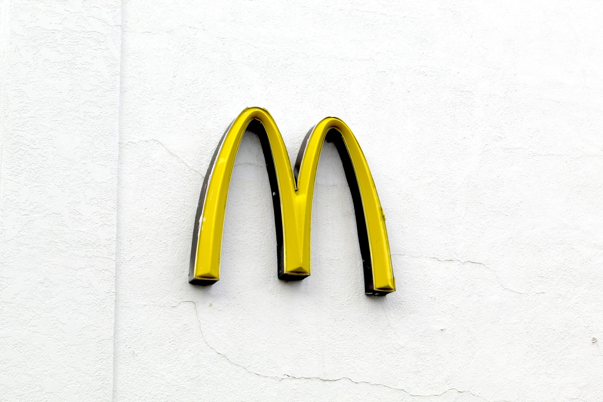
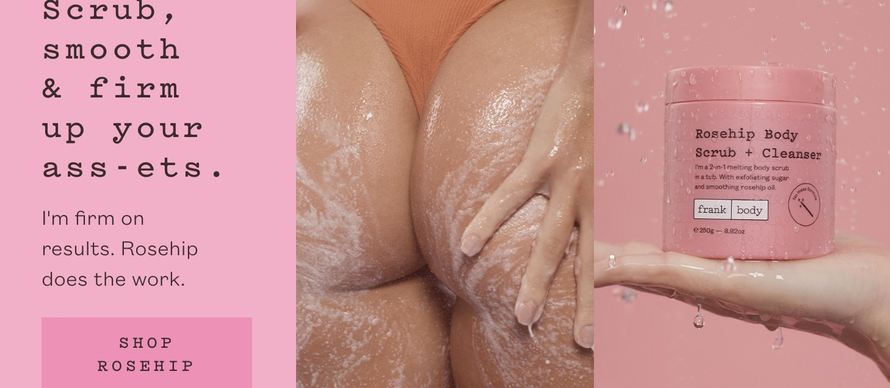
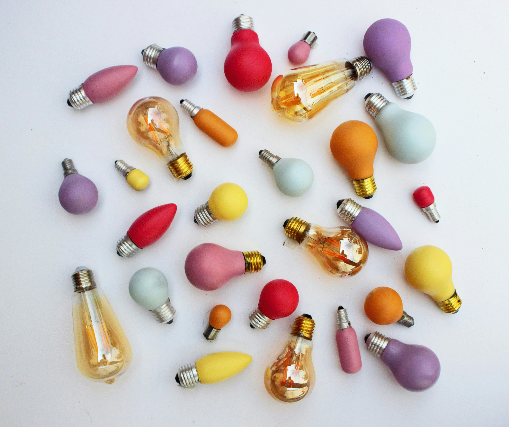
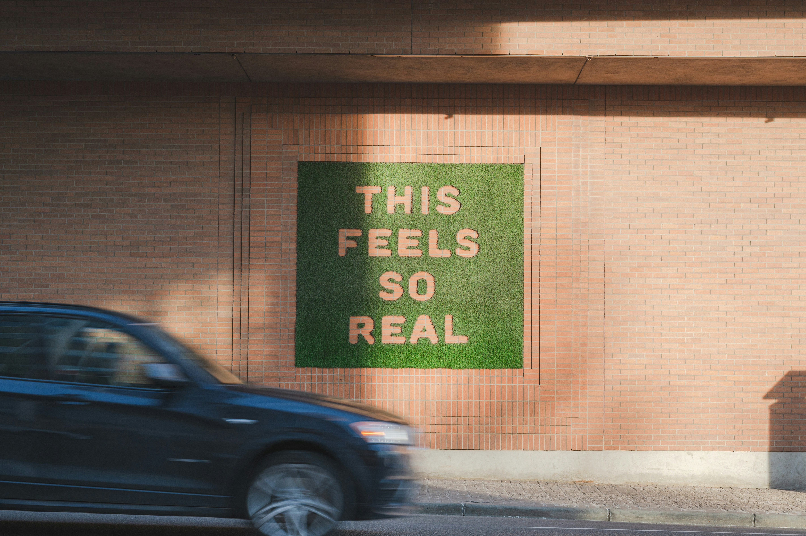

Performance
Performance
Performance
Performance
 Positioning
Positioning
Brand Positioning: How to Stand Out in a Saturated Market
Read articleWhy Your Brand Isn't Converting (A Strategic Breakdown)
Read article Founders
Founders
What to Look for in a Brand Agency (From a Strategic Perspective)
Read articleWhy "Premium" Branding Isn't About Aesthetics - It's About Perception
Read article
Brand StrategyFrom Invisible to In-Demand: How to Build a Brand People Actually Choose
Read article Performance
Performance
The Hidden Cost of a Weak Brand (And Why It Shows Up in Your Marketing)
Read article
Brand StrategyWhat Happens When You Finally Get Your Brand Right
Read articleDo You Actually Need a Rebrand - Or Just Better Strategy?
Read article
Case StudyFrank Body: The Brand That Spoke First - And Won Because Of It
Read article Brand Strategy
Brand Strategy
You're Sitting on Insight - But Using It Like Output
Read articleAI Won't Replace Brand Strategy - But It Will Expose Weak Ones
Read articleThe Brands That Last vs The Brands That Spike
Read article
Brand StrategyWhat 14 Years in Brand Strategy Teaches You (That No Framework Can)
Read article Brand Strategy
Brand Strategy
Why Most Brands Plateau — And Don't Know Why
Read articleThe Myth of the "Target Audience" (And What to Define Instead)
Read articleWhy Brand Strategy Should Come Before Performance Marketing
Read article
Brand StrategyWhat Makes a Brand Feel "Right" — And Why It Matters
Read article Brand Strategy
Brand Strategy